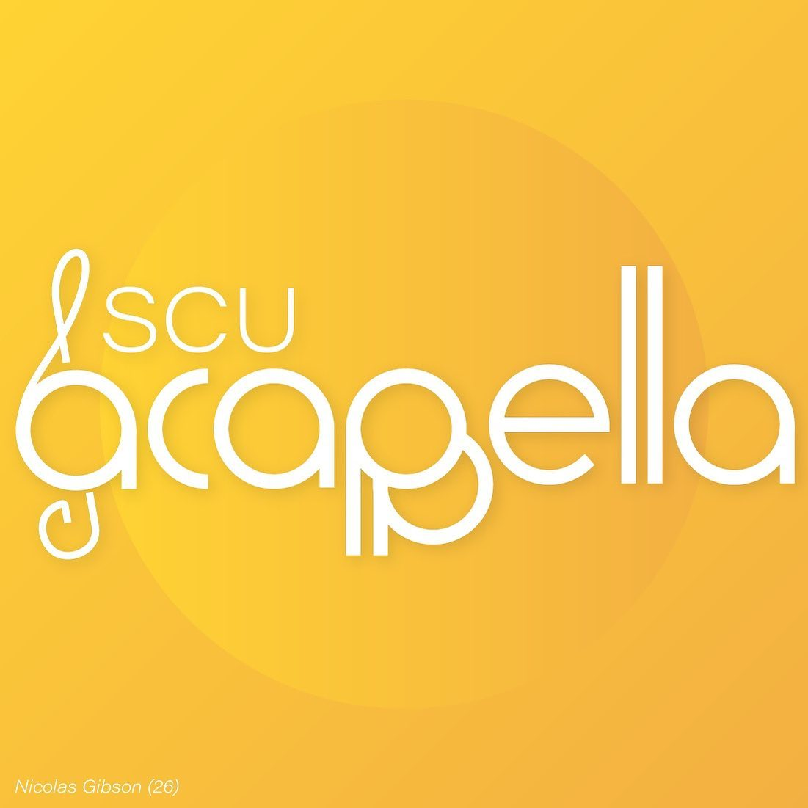
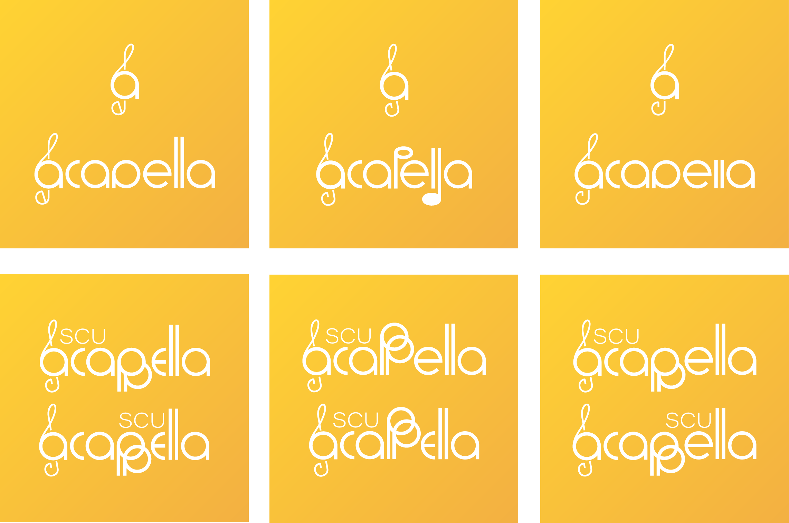

I was contacted to design the new official logo of SCU A Cappella, which was then implemented in January 2023. To do so, I communicated with SCU A Cappella leadership frequently, provided multiple logo variations for the client, & revised the logo based on feedback from client. Once the final logo was decided, I created several designs for use in marketing. Stickers were eventually created and distributed by SCU A Cappella with my designs.
Logo drafts presented to the client.

Final logo & marketing usage.
